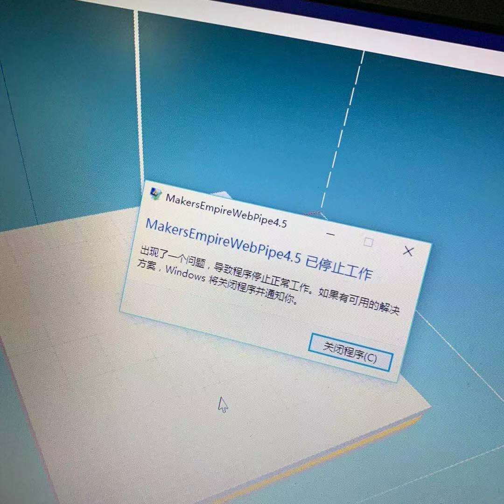

网络连接正常，操作时却提示网络没有连接
查看设置界面的语言，如果是英文，修改为中文后，点击"连接到创客帝国服务器"
安装软件出现错误，提示"error code 2503"，或者"error code 2502"
因为使用了非管理员用户安装，或者没有管理员权限，可以右键点击安装包，选择“使用管理员权限运行”。
如果右键没有“使用管理员权限运行”的用户，先打开任务管理器（快捷键ctrl+shift+esc）点击文件，点击运行新任务输入安装包路径勾选"以系统管理权限创建此任务",点击确定即可安装,参考下图
软件使用报错"Couldn’t switch to requested monitor resulution"

win10
右键ME图标，选择属性 -> 兼容性-> 关闭全屏优化
Win7/Win8/Win10：
方案1：找到或创建ME桌面快捷方式 -> 右键选择属性 -> 目标栏中在 .exe 后添加: “空格-w” 保存后双击图标即可打开程序。
方案2：更新DX版本，更新显卡驱动。
方案3：将屏幕分辨率调整到800x600后开启ME程序，然后将分辨率修改回原来的分辨率即可。
操作中出现"MakersEmpireWebPipe4.5已停止工作"
目前4.4.2.0版本中存在此问题，下个版本会进行修复，如果有此问题，可下载4.4.19版本
网盘链接:
https://pan.baidu.com/s/101AVWR3HvsNz19Psxlb-mg
提取码: r5sb
网络通畅，但是显示无法联网，"我的"标签页上面WIFI标志显示为黄色
用户在没有网络的情况下创建账号，会出现此情况，连接网络后，需要在"我的"界面，点击"现在连接"按钮，然后在弹出的窗口点击红叉即可同步账号
导出至STL出错
打印按钮只需点击一次即可，STL文件会在服务端生成好之后发送到邮箱或下载到本地，频繁点击则会显示"导出至STL出错"
网络连接错误，无法正常连接
请查看是否勾选了"启用代理",如果没有特殊需求，请确保"启用代理为关闭状态"
挖空指令，先选哪个再选哪个？
直接选中要被挖走的模型，再选择挖空指令。
吸附指令，如何使模型直接落在网格上？互相吸附又是如何操作？
先选中要落在网格上的模型，再点击吸附指令；互相吸附时，只要在被选中的模型上选择吸附指令即可具有互相吸附的作用。
手机或平板上如何导出文件？
手机或平板无法导出stl文件，只能通过邮件的方式导出stl文件。
如何修改默认的邮箱？
在个人中心设置中进行修改邮箱。
网络正常的情况下，打开软件提示无法连接网络
请检查网络连接，并查看是否勾选了使用代理，如果多用户出现此问题，请联系技术人员